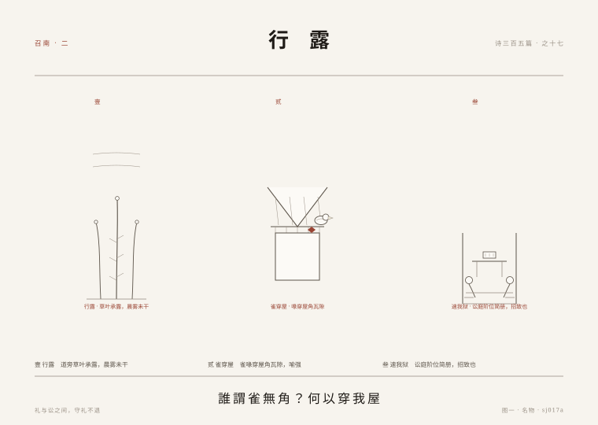
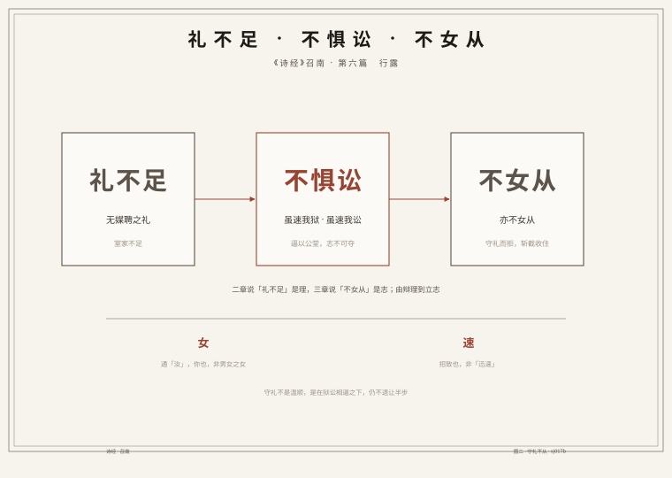

第十七篇 行露
召南 · 之二 SJ017
朗读 · 普通话
依经文正文朗读，句读从文；不配乐、不改速、不加拖腔。全库同一音色（豆包 TTS），非播音员录制。
一 解题
诗三判：
- 谁在说：一个被逼婚、被逼讼的女子。两章六问，句句反问，口气硬而不乱。
- 说什么事：道上露水重，早夜行路为难；有人无媒聘之礼，却要以狱讼相逼。雀本无角而穿我屋，鼠本无牙而穿我墉——强梁者以无理凌人；虽速我狱讼，终不汝从。
- 为何编在此：召南诸篇写「已成之后靠什么维持」，此篇写「未成之前守什么」——礼。守礼不是温顺，是在讼逼之下仍不退让。
《毛序》：「《行露》，召伯听讼也。衰乱之俗微，贞信之教兴，强暴之男不能侵陵贞女也。」——把此篇系于召伯听讼之事。
朱子《诗集传》：「女子有贞信之节，不为强暴之男所污，故作是诗。」——朱子从诗本文，读作贞女拒强之辞，不牵合听讼。
本库的看法：这首诗的骨在「礼与讼之间」。
对方以狱讼相逼，是「讼」；女子守媒聘之礼而不从，是「礼」。全篇不骂对方，只以雀鼠穿屋穿墉为喻，说无理之强；末句「亦不女从」，斩截收住。
二 经文
第一章
厭浥行露，豈不夙夜？謂行多露。
第二章
誰謂雀無角？何以穿我屋？誰謂女無家？何以速我獄？雖速我獄，室家不足！
第三章
誰謂鼠無牙？何以穿我墉？誰謂女無家？何以速我訟？雖速我訟，亦不女從！
分章：毛传、朱子皆三章。首章三句，起兴；二、三章各六句，章法全同，只换屋／墉、狱／讼、足／从。二章收在「室家不足」，三章收在「亦不女从」，由说理到斩绝。
三 韵读
| 一 |
夜、露 |
铎部 |
| 二 |
屋、獄、足 |
屋部 |
| 三 |
墉、訟、從 |
东部 |
首章铎部入声，涩而滞，像露重难行；二章屋部短促，三章东部洪敞——末章「从」字开口收住，「亦不女从」是这一篇的落脚声：决绝。
四 字义名物
- 厭浥（yǎn yì）——湿润貌，露水沾濡之状。
- 行（háng）——道路。不是「行走」之行；行露即道上之露。
- 夙夜——早夜，早晚赶路。
- 謂——一说畏（畏露之多），一说「说」。此处从「畏」读于义为顺；存疑并列。
- 雀——麻雀类小鸟。角：雀本无角，此言其喙之利，如能穿屋。不是兽角。
- 穿我屋——啄穿屋宇，喻强凌之侵。
- 女——通「汝」，你。不是男女之女。
- 無家——无媒聘之礼、未备室家之仪。不是没有家室。
- 速——招致，招引。不是「迅速」。
- 獄——诉讼，争狱。
- 室家不足——室家之礼不足，聘仪不备。
- 鼠——田鼠家鼠。牙：齿；穿墉之具。
- 墉（yōng）——墙。
- 訟——争讼，公堂对质。
- 不女從——即「不从女」，不嫁你。女，汝。
五 今译
第一章
道上露水湿漉漉的，难道不想早夜赶路？只怕路上露水太多。
第二章
谁说雀没有角？凭什么穿破我的屋？谁说你没有家室之礼？凭什么招来我的官司？纵然招来官司，室家之礼本来不足！
第三章
谁说鼠没有牙？凭什么穿破我的墙？谁说你没有家室之礼？凭什么招来我的争讼？纵然招来争讼，我也决不顺从你！
译注：「女」译「你」，「速」译「招来」，「无家」译「没有家室之礼」；「室家不足」译「礼不足」，不作家贫解。「角」「牙」皆喻强梁之器，非实指兽角鼠牙。
六 章旨
一章：起兴于露。行多露则难行，比礼不备则难从；先写行路之难。
二章：以雀穿屋喻强。无角而穿屋，无理而逼人狱；室家之礼不足，官司亦不屈。
三章：以鼠穿墉喻强。无牙而穿墉，复以讼相逼；虽讼，终不从。
二、三章是同一拒绝的两进：二章说「礼不足」（理），三章说「不女从」（志）。
由辩理到立志，口气一章硬过一章。
七 诗教
- 赋：两章反问直陈其事；首章托物起兴，赋中带兴。
- 观：可观一「守」。守礼之女，面对狱讼之逼，不退半步；守在礼上，不在声高。
- 群：此拒非一人之私忿，所守是媒聘之公礼；一人之节，亦是一国之俗。
- 怨：怨而不怒。有被逼之怨，无谩骂之辞；雀鼠之喻，冷而不毒。
八 分寸与边界
- 不可把「女」读作男女之女。此通「汝」，你也；「不女从」即「不从汝」。
- 不可把「无家」解作没有家室。所指是无媒聘之礼、室家之仪不备；与贫富鳏独无关。
- 不可把「速」解作迅速。速是招致；「速我狱」即招来我的官司。
- 不可把雀之「角」、鼠之「牙」坐实成兽类兵器。雀本无角、鼠本无牙，诗正以「无而能穿」喻无理之强。
- 不可把此篇读成告官胜诉的状词。诗是拒婚之辞，「虽速我狱」是假设之辞，非已在狱中；《毛序》听讼之说可存为背景，不作诗之正面。
九 存疑
- 说者身份：《毛序》以为贞女拒强暴，朱子同；一说为丈夫弃妻自明，一说为家有女而拒强媒。本库取贞女拒强。
- 「谓」之训：一说畏也（畏露），一说「谓」如同「言」。本库取畏，存异说。
- 首章与二、三章之关系：一说首章兴「礼难可犯」，一说首章别为一事（早夜畏露），与下文不连。本库取起兴相连。
- 「室家不足」之解：一说聘礼不足，一说男方家室薄弱。本库从聘礼不足，与「无家」相贯。
- 是否召伯听讼之诗：《毛序》系于召伯听讼，朱子不从。本库以诗本文为准，听讼说存录于解释史。
十 跨典
- 《礼记·昏义》「昏礼者，将合二姓之好」，必纳采、问名诸礼备而后成——「室家不足」即六礼未备。
- 《周礼·媒氏》「男女阴讼，凡娶判妻入子者，皆书之」——古有媒氏之官，无媒不成婚；此篇所守，正是此礼。
- 《鄘风·柏舟》「之死矢靡它」——同是守节拒逼之诗；彼言死誓，此言礼拒，一烈一守。
- 《召南·采蘋》「谁其尸之？有齐季女」——同卷女子之事；彼写教成而主祭，此写礼备而后从。
- 《左传·昭公元年》「男女辨姓，礼之大司也」——婚姻之重礼，与本篇「礼不足则不从」相发。
十一 双卡与图
双卡五对：
| 行露（道上之露） |
行走（误读 háng 为 xíng） |
| 女（汝，你） |
男女之女（误训） |
| 无家（礼不备） |
无家室（误训） |
| 速（招致） |
迅速（误训） |
| 狱·讼（公堂相逼） |
不女从（守礼而拒） |

图一 · 行露·雀穿屋·鼠穿墉 名物图

图二 · 礼不足 · 不惧讼 · 不女从 义理图
读图三处：
- 露在道上，不在草叶：「行」是路；左格画一条道，道面点露滴，不画草木上的露。
- 雀喙如角、鼠齿如牙：中二格画雀啄屋之破口、鼠啮墙之缺口；鸟鼠皆小，所穿之处是屋与墉——强不在物之大小。
- 屋与墉是所守的家：右格不画公堂；讼是对方的手段，守的是自己的屋墉与礼。